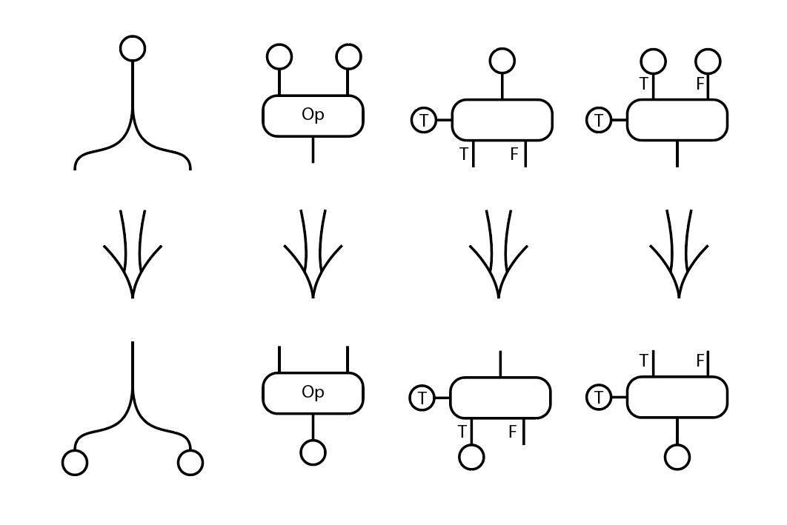
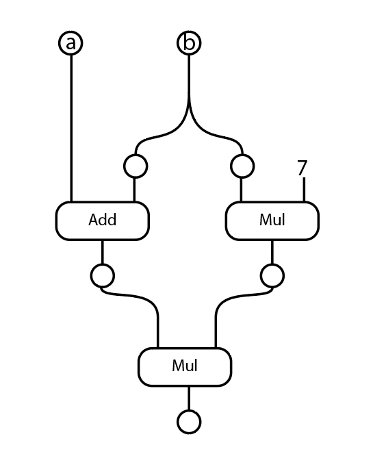
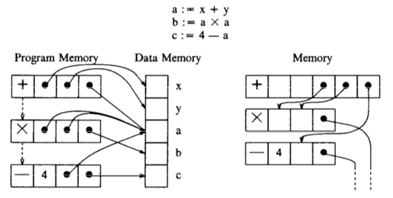
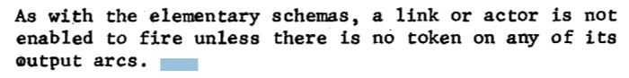
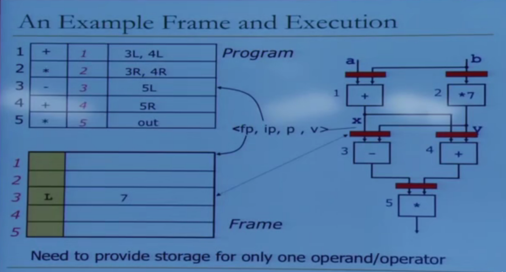
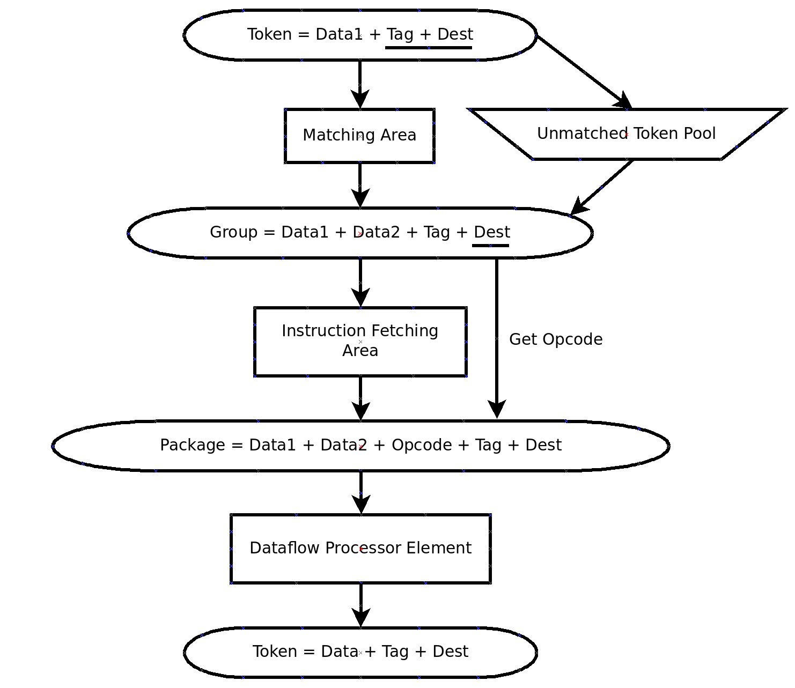

数据流发展综述
自计算机诞生以来, 计算机系统研究人员为提升计算速度, 一直百折不挠、不懈努力. 几十年间学 术界、产业界开展了多种多样的计算机体系结构探索, 产生了很多令人耳目一新的成果, 人们熟知的冯诺依曼结构瓶颈被反复诟病, 但是冯诺依曼计算机结构依然是当前计算机系统的主流架构. 在 谈及非冯计算机体系结构时, 数据流计算机无疑是被提及最多的.
控制流计算思想在表达计算任务方面比较符合人类的思考习惯.首先通过指令序列描述计算任务执行过程. 其中, 指令用操作码表示功能, 操作数表示被处理的数据. 控制流计算任务被描述为一串指令序列. 经典计算机体系结构中, 设计了以程序计数器 (program counter, PC) 为核心的控制器实现控制流计算思想.在执行时首先需要将待执行的指令取出, 经过译码后执行指令, 并通过地址访问内存, 获取需要的数据, 最后将结果数据写回到存储器中. 完成该条指令后, 程序计数器自动加一, 获取下一条指令继续上述流程. 在计算机系统发展初期,研究人员逐渐发现控制流计算思想中存在的性能瓶颈问题, 即指令执行是串行的, 而且取指令、取操作数、存结果等动作都需要访问存储器。
在基于数据流的计算任务中, 一项运算操作在获得了所有需要的操作数时即可执行, 所产生的结果数据不会被存储器保存, 而是直接作为操作数发送给后续的操作, 直到产生最终的输出结果. 与控制流计算思想中的指令序列串相比, 数据流图以图的形式描述了计算任务的并发执行全过程, 同时数据可以按照数据流图中边的指向直接传递到运算操作, 不需要缓存到存储器中.
静态数据流机是根据数据流计算思想, 具体实现出来的一种执行机构, 其基本结构主要由取指令部件、指令存储部件、处理部件、更新部件等组成. 在静态数据流机中运行程序时, 操作数不通过 “寻址” 被访问, 而是通过 “令牌 (token)” 或 “值” 的形式进行传递. 数据流计算机中的信息项由数据令牌和操作包组成, 其中, 数据令牌由结果值和目的地组成, 操作包由操作码、操作数和后继指令位置等组成. 待执行的数据流程序存放在指令存储部件中, 当某条指令所需的所有数据令牌都到达后, 取指令部件将相应的指令取出, 发送到可执行指令队列. 当物理计算资源有空闲时, 队列中的指令将依次被分配给处理部件进行并发执行. 这种等待结点所有输入弧中都获取到令牌后触发该结点执行的行为被称为“点火(firing)”, 是数据流计算模型的重要特点之一. 所产生结果形成新的令牌发送到更新部件中, 更新部件按令牌中的目标地址将令牌发送到指令存储部件内的相应指令位置.如果有指令已经获取到了所有需要的令牌, 更新部件会将该指令的地址发送给取指令部件, 进行下一次的数据流执行.
动态数据流机重点解决数据流图的边存在多次执行的问题. 静态数据流机虽然具备基本的数据流执行能力, 但它不仅依赖于数据, 也需要配合带有简单控制信号的 “控制令牌” 来确认指令间的数据传送, 且无法保证并发的重复性调用 (例如递归)对于这个问题, 动态数据流机通过 “标号令牌(tagged-token)” 的方式, 使单条弧上可以同时存在多个不同的令牌. 相比于静态数据流机, 动态数据流机在执行机构上增加了一个 “匹配部件”, 该部件负责添加标号和匹配标号的工作, 使数据令牌的传送不再依赖于控制令牌. 更新/取值部件通过标号的配对, 从指令存储部件中获取指令, 结合收到的数据令牌组, 合并出可执行的指令, 送至可执行指令队列. 这样一来, 数据流程序的并行性得到了更大限度的开发, 也具备了更完善的功能.
Dennis 的 数据流
文章：https://dl.acm.org/doi/10.1145/642089.642111
这篇文章可以说是诸多数据流研究的开端。有人称，这种数据流叫做 Static Data Flow，也有人叫 Pure Data Flow。
其核心思想可以用：A data flow node fires (fetched and executed) when all its inputs are ready 进行概括。
Dennis老师对数据流处理器进行了四种基本模块的设计：
- Fork
- Primitive Ops
- Switch
- Merge
图示：
数据流图中，所有的值可以表示为 token 的形式，一般来说，token 采用一个三元组的形式：<ip, p, v>， 其中，ip为指令指针，指向对应的数据流元件，p为端口，表示对应的数据流接口，v为指令值，表示传递过去的数据。
举个例子：
$x = (a + b) * (b * 7)$
流图形式为：
其中 (a + b) 的结果 姑且称为 c，c可以记录为：<Mul-2, Left, (a + b)>, Mul-2 是因为他传入第二层的乘号，Left 是传入左侧 Port
一个非常经典的例子可以说明控制流和数据流的区别：
其中所有的弧线表示数据依赖，如果采用数据流，那么每一个格子，即我们使用到数据的地方，是不可能有重复弧边的，这说明数据流方法可以有效规避数据依赖导致的冒险等问题。
为了使得程序正常运作，需要一些“协议”保证，论文原文如下：
即输入就绪、输出弧无数据阻塞。但是静态数据流依旧。此外还有一条，但是是在static的定义中被补充：
每个计算节点只有一个指令实例可以被fire。
即每一条指令同一时间只能被一次执行。对于高度复用类型的程序，static数据流就不再合适，例如：循环程序和复杂数据结构。
Monsoon 处理器
文章： Executing a Program on the MIT TaggedToken Dataflow Architecture
上述所说，为了处理类似循环，我们需要将token放在unbounded queue的结构中。这就诞生了 dynamic dataflow。
dynamic dataflow 中引入了一个新的结构，有人称为 context， 有人称为 frame pointer，有人称为 instruction template。总之就是对 token 的一个拓展。
现在的形式为：
token <fp, ip, port, data>
fp 即为 frame pointer，用于记录此条token将被哪个指令实例所接收。如果Frame里面已经有buffer记录了，那么可以流动起来并且计算结果，否则就将此token记录存储在frame列表中。
此设计被发表于 ISCA 1990
动态数据流的思路可以简单的用这张图概括：
更多关于 Tag 的处理在论文中有所介绍，不过这一部分和我们的需求不尽相同，这里不做过多探究。
传统数据流方法的优劣
上述的两种方法其实都是传统数据流方法。作为经典的数据流方法，他们的优势是非常明显的：
- 可以最大程度上激发并行度，即使对于不规整的程序行为（不简单直接的控制人跳转，复杂的依赖关系等等）也有极好的并行效果
- 只有“实际依赖”才会阻塞程序（写后读依赖）
缺点同样明显：
- 数据流编程模式缺乏固定统一的方法和接口，同时debug非常困难，因为程序原有的逻辑行为已经被破坏，也没有固定的状态表示方法
- 中断行为描述起来异常困难，没有很好的控制方法把程序终止
- 过于依赖查表（tag表、数据表等等），对内存不友好，对计分板设计提出极高的需求
- 指令周期不固定，阻塞时间不定长，关键节点的流速会影响全局流速
发展设想：数据流和控制流的结合
设想1: ISA级别优化
对于大体框架我们保持不变，但是我们的数据流针对ISA级别进行处理，编译器不改动，对后端的架构进行更新和修改。
即： Keep control flow at the ISA level, do dataflow underneath, preserving sequential semantics
设想2：整合模式
保留数据流模型，但在 ISA 级别合并控制流以提高效率、利用局部性并简化资源管理（计分板）。同时将线程合并到数据流中：先静态方法排指令；当第一条指令被触发时，剩余的指令会不间断地执行。
Keep dataflow model, but incorporate control flow at the ISA level to improve efficiency, exploit locality, and ease resource management
Incorporate threads into dataflow: statically ordered instructions; when the first instruction is fired, the remaining instructions execute without interruption
其实这种模式方案更贴切，如果需要实现这种方案，直观的思路有二：
- 用编译器处理
- 提高用户门槛，让用户使用指导语句、编程接口去自己控制数据流图
如何更好的将两者整合实现时我们的目标。
UPC++
UPC++是一个支持分区全局地址空间（PGAS）编程的C++库。它是设计用于在分布式内存并行计算机上编写高效、可扩展的并行程序的一个工具。UPC++的关键通信设施是单边远程内存访问（RMA）和远程过程调用（RPC）。UPC++的控制模型是单程序、多数据（SPMD），每个独立的组成程序进程可以像在C++中那样访问本地内存。PGAS内存模型另外还提供 全局地址空间的单边RMA通信，它被分配在共享段中，分布在各个进程中。分布在各个进程中。
UPC++还具有远程程序调用（RPC）的功能。通信，使其很容易将计算转移到驻留在远程进程的数据上进行操作。UPC++的设计是为了支持超大规模的高性能计算，库的接口和 实施的重点是最大限度地提高可扩展性。在UPC++中，所有的通信操作都是 语法上是明确的，这鼓励程序员考虑与通信和数据移动相关的成本。和数据移动相关的成本。此外，所有的通信操作在默认情况下都是异步的，鼓励程序员寻求重叠的机会。程序员寻找机会将通信延迟与其他有用的工作重叠起来。UPC++ 提供了富有表现力和可组合的抽象，旨在有效地管理程序中异步的积极使用。在程序中的积极使用。这些设计原则的目的是使程序员能够使用UPC++编写应用程序，即使是性能良好的程序。使用UPC++编写应用程序，甚至在几十万个内核上也能表现良好。